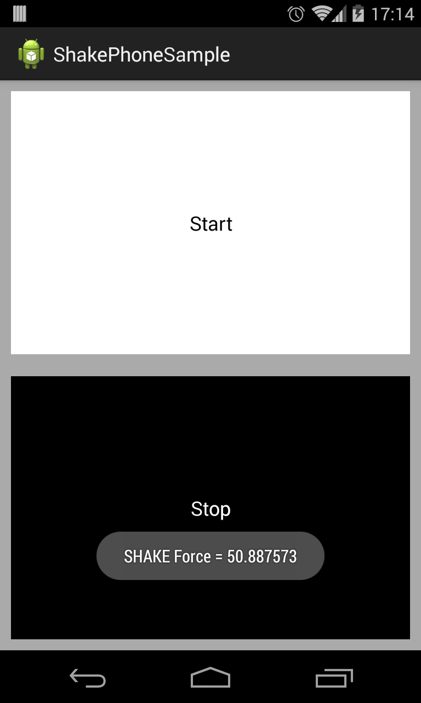

ShakeIt
This library runs background service that is listening for shake movements in device.

Usage
Add library to your build.gradle:
compile 'com.jcmore2.shakeit:shakeit:1.0.0'
Declare ShakeIt service in your AndroidManifest:
<service
android:name="com.jcmore2.shakeit.ShakeService"
android:exported="false"
android:label="@string/app_name"/>
To use ShakePhone library you can initialize ShakeIt using a Context instance and one ShakeListener:
ShakeIt.initializeShakeService(this, new ShakeListener() {
@Override
public void onShake(float force) {
shakeButtons();
}
@Override
public void onAccelerationChanged(float x, float y, float z) {
}
});
Or customizing threshold and interval:
ShakeIt.initializeShakeService(this, 20, 600, new ShakeListener() {
@Override
public void onShake(float force) {
shakeButtons();
}
@Override
public void onAccelerationChanged(float x, float y, float z) {
}
});You can stop the ShakeIt service like in this sample:
ShakeIt.stopShakeService(context);
and Just Shake your phone!!
Credits & Contact
ShakePhone was created by jcmore2@gmail.com
License
ShakePhone is available under the Apache License, Version 2.0.